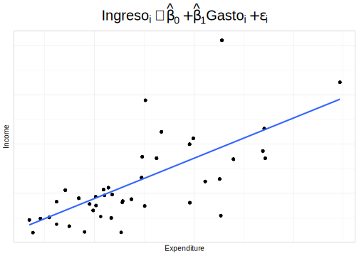

Capítulo 9 Modelos multinivel
Los modelos multinivel, también conocidos como modelos de efectos mixtos o modelos jerárquicos, son una técnica estadística utilizada en el análisis de datos de encuestas de hogares para incorporar una estructura jerárquica o multinivel. En estas encuestas, los datos se recopilan a nivel individual (por ejemplo, sobre la edad, el género y la educación de cada miembro del hogar) y a nivel del hogar (por ejemplo, sobre el ingreso del hogar, la propiedad de la vivienda y la ubicación geográfica). Además, permiten analizar cómo los factores a nivel del hogar y a nivel individual influyen en las respuestas a las preguntas de la encuesta. Por ejemplo, un modelo multinivel podría utilizarse para investigar cómo el ingreso del hogar y la edad de los miembros del hogar influyen en el consumo de alimentos saludables.
En los modelos multinivel, se trabajan con dos tipos de efectos: los efectos aleatorios y los efectos fijos. Los efectos fijos representan las relaciones promedio entre las variables, mientras que los efectos aleatorios modelan la variación en estas relaciones entre los hogares. De esta manera, los modelos multinivel permiten tener en cuenta la heterogeneidad en la población y obtener estimaciones más precisas de las variables de interés. Por tanto, los modelos multinivel son una herramienta valiosa en el análisis de datos de encuestas de hogares al permitir analizar cómo los factores a nivel del hogar y a nivel individual influyen en las respuestas a las preguntas de la encuesta y al tener en cuenta la estructura jerárquica de los datos.
Algunas referencias bibliográficas relevantes sobre el uso de modelos multinivel en encuestas de hogares son Goldstein (2011), que es una referencia clásica para el análisis de datos multinivel, y aborda el uso de modelos jerárquicos en una variedad de contextos, incluyendo encuestas de hogares; Gelman y Hill (2019), que ofrece una introducción accesible a la teoría y la práctica de los modelos jerárquicos; Rabe-Hesketh y Skrondal (2012), el cual es una guía práctica para el análisis de datos multinivel y longitudinales utilizando el software estadístico Stata; Browne y Draper (2006) que compara los enfoques Bayesianos y frecuentistas basados en verosimilitud.
Para iniciar este capítulo se cargan las librerías necesarias, la base de datos y el tema de la Cepal para realizar los gráficos:
Cargue de librerías:
knitr::opts_chunk$set(cache = TRUE, warning = FALSE, message = FALSE, error = FALSE)
options(digits = 4)
options(tinytex.verbose = TRUE)
library (survey)
library(srvyr)
library(convey)
library(TeachingSampling)
library(printr)
library(stargazer)
library(broom)
library(jtools)
library(modelsummary)
library(patchwork)
library(ggplot2)Cargue de la base de datos:
Creando el tema de la CEPAL para generar los gráficos en este capítulo:
theme_cepal <- function(...) theme_light(10) +
theme(axis.text.x = element_blank(),
axis.ticks.x = element_blank(),
axis.text.y = element_blank(),
axis.ticks.y = element_blank(),
legend.position="bottom",
legend.justification = "left",
legend.direction="horizontal",
plot.title = element_text(size = 20, hjust = 0.5),
...) Para efectos de ejemplificar los conceptos que se presentarán en este capítulo, primero considere que la muestra tiene una naturaleza jerárquica, puesto que las viviendas fueron seleccionadas a partir de los estratos. Luego, el estrato será usado para analizar el comportamiento del fenómeno de interés.
encuesta_plot <- encuesta %>%
dplyr::select(HHID, Stratum) %>% unique() %>%
group_by(Stratum) %>% tally() %>%
arrange(desc(n)) %>% dplyr::select(-n) %>%
slice(1:6L) %>%
inner_join(encuesta) %>% filter(Expenditure < 700) %>%
dplyr::select(Income, Expenditure, Stratum,
Sex, Region, Zone)
encuesta_plot %>% slice(1:10L)| Income | Expenditure | Stratum | Sex | Region | Zone |
|---|---|---|---|---|---|
| 697.3 | 296.1 | idStrt017 | Male | Norte | Rural |
| 697.3 | 296.1 | idStrt017 | Female | Norte | Rural |
| 697.3 | 296.1 | idStrt017 | Male | Norte | Rural |
| 697.3 | 296.1 | idStrt017 | Female | Norte | Rural |
| 526.8 | 294.8 | idStrt017 | Male | Norte | Rural |
| 526.8 | 294.8 | idStrt017 | Female | Norte | Rural |
| 526.8 | 294.8 | idStrt017 | Female | Norte | Rural |
| 526.8 | 294.8 | idStrt017 | Male | Norte | Rural |
| 526.8 | 294.8 | idStrt017 | Male | Norte | Rural |
| 526.8 | 294.8 | idStrt017 | Female | Norte | Rural |
A modo introductorio, en el siguiente gráfico se ajusta un modelo lineal simple cuya variable de interés son los ingresos de los hogares con una sola variable explicativa correspondiente a los gastos de los hogares, sin considerar el efecto de los estratos en el diseño muestral.
library(latex2exp)
ggplot(data = encuesta_plot,
aes(y = Income, x = Expenditure)) +
geom_jitter() +
theme(legend.position = "none",
plot.title = element_text(hjust = 0.5)) +
geom_smooth(formula = y ~ x,
method = "lm",
se = F) +
ggtitle(
latex2exp::TeX(
"$Ingreso_{i}\\sim\\hat{\\beta}_{0}+\\hat{\\beta}_{1}Gasto_{i}+\\epsilon_{i}$"
)
) +
theme_cepal()
Como se ha explicado en capítulos anteriores, el modelo de regresión se basa en varios supuestos principales con respecto a la naturaleza de los datos en la población; más específicamente asume independencia de las observaciones. Naturalmente este supuesto no es válido, más aún cuando la selección de la muestra se hace de para cada estrato de muestreo y además, el comportamiento de los estratos muestrales es diferente entre ellos. Teniendo en cuenta lo anterior, se ajusta un modelo de regresión en donde el intercepto cambia de acuerdo con cada estrato. Por lo general, nos referimos a la estructura de datos descrita anteriormente como anidada, lo que significa que los puntos de datos individuales en un nivel (por ejemplo, la persona o el hogar) aparecen solo en un nivel de una variable de nivel superior, como el estrato de muestreo. Por lo tanto, las personas u hoagres están anidados dentro del estrato.